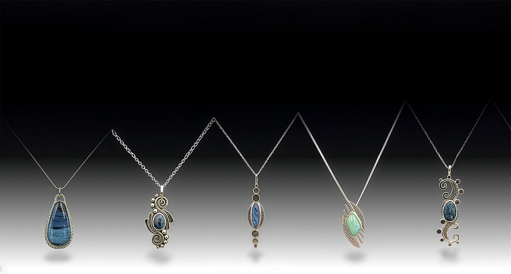
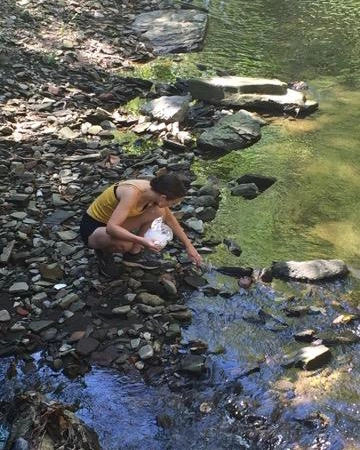
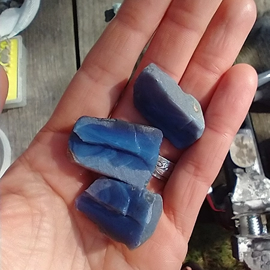
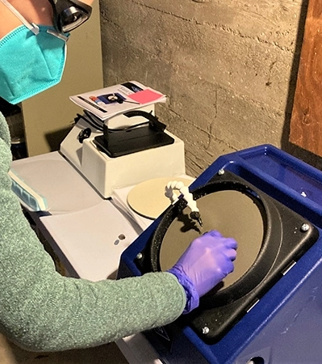
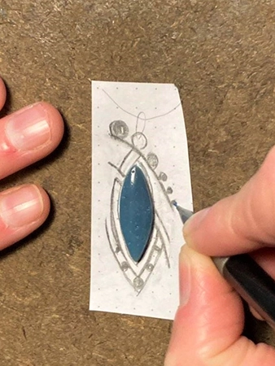
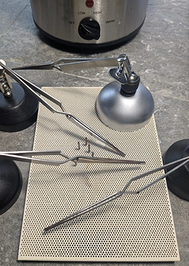
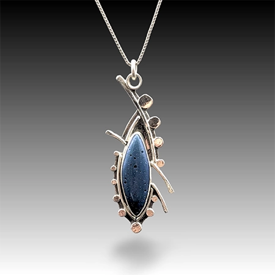
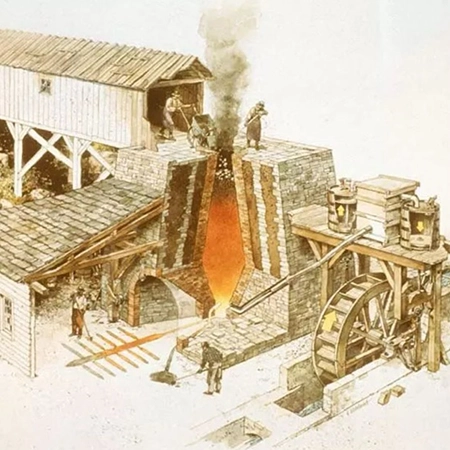
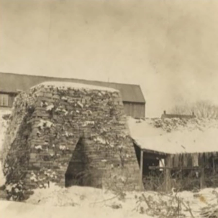

I mostly create sterling silver necklaces that often focus on rare, historically significant, repurposed and unusual materials that have an intriguing story to tell including Pennsylvania Slag Stones from 19th century iron furnaces, and Fordite from overspray paint buildup in automotive factories. I personally hunt for each raw slag piece throughout PA, and purchase large chunks of Fordite from individuals in the Detroit area who have found them in dump sites or abandoned factories. After acquiring raw materials, I cut, shape, polish and finish each stone using lapidary techniques then use the characteristics of the final piece to design and create its sterling silver setting (see more about my process below!)

Finding Slag
The first step in creating slag jewelry is hunting for it!
Prior to looking for slag, I make sure to obtain permission from the curator or land owner.
Slag was created and is found surrounding the 19th century cold blast iron furnaces, and hunting for the perfect piece is often an adventure.
Slag was heavy, so workers often dumped it in nearby pits and streams. These are the locations where most slag is found.
The best pieces of slag for jewelry have high density (more like glass, with no pores or holes) and are blue with variations in blues and whites.

Cutting Raw Material
After finding a piece of slag with the ideal combination of color, texture, and density, I cut it into slabs using a
trim saw to identify sections containing unique features and patterns.

Shaping Cut Slabs
Once a raw slab is created, I use a set of lapidary wheels to grind/shape the slab to the desired shape, then use a series
of polishing wheels to smooth the surfaces and bring out details and characteristics of the stone. Finally, I use a polishing compound to finish
the stone.

Creating a Design
I always finish a stone prior to designing. That way, I can use the stone's unique shapes, features, colors, and characteristics
to design a pendant. I start with pencil and paper, and once happy with a design, fabricate the necessary sterling silver components
for soldering.

Soldering the Design
Once the sterling silver components are fabricated and set into place, I use soldering techniques to join all pieces including
a bezel wire, depending on how the stone will be set into the pendant. Once soldered, I pickle and clean the piece in addition to
removing and smoothing rough edges and excess silver.

Finishing the Piece
Further finishing and polishing are accomplished using radial bristle disks, polishing paper, and finally polishing compounds to
create that beautiful shine! Only after the pendant is completely polished and finished do I set the stone into the piece.


The Pennsylvania Slag Stone, or Slag Glass, is a beautiful artifact of the famed iron furnace era of the 18th and 19th centuries. Throughout the state, iron ore was mined and converted into pig iron through the process of smelting in massive stone furnaces. The pig iron was then sold to forges in locations such as Pittsburgh for further refinement into steel, and often hammered into wrought iron in local forges prior to shipment. The byproduct of the iron ore smelting process was known as “slag” which furnace workers simply discarded as waste. Once cooled and solidified, it had a blue/green glassy or stone-like appearance.
PA Slag varies greatly in color including solid to variegated rich blue and green, black, gray, and even purple. Although PA Slag Stones are considered glass due to their composition, often possessing a dense transparent appearance, some slag is opaque and porous with a sponge-like texture. Each stone’s color and texture is a result of the heating and cooling processes, along with the chemical composition of the slag after separation from the iron. The composition of PA Slag varies but is primarily composed of silicon, calcium, sulfur, magnesium, aluminum, manganese, iron, and often several other elements.
Pennsylvania is not the only location to have slag stones with similar history. In fact, one of the first known origins and uses of slag was in Greece during the Bronze Age (3300-1200 BC) where slag from copper foundries was used in jewelry and ceramic pieces. Slag from past iron ore charcoal blast furnaces in Michigan, Sweden, and Tennessee are well known for their local historical significance and beauty, and are celebrated as semi-precious gemstones often featured in jewelry.